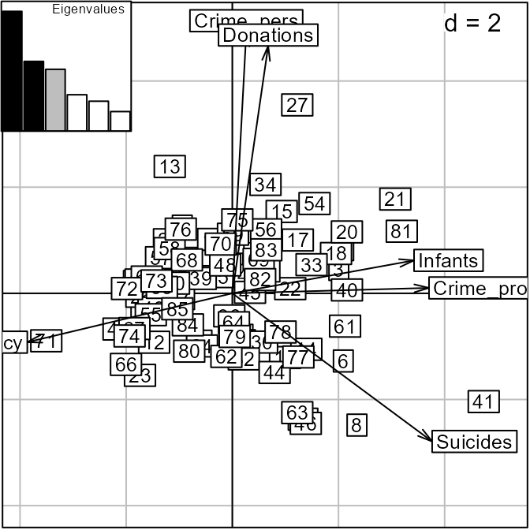
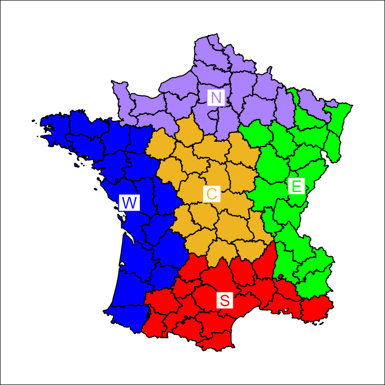
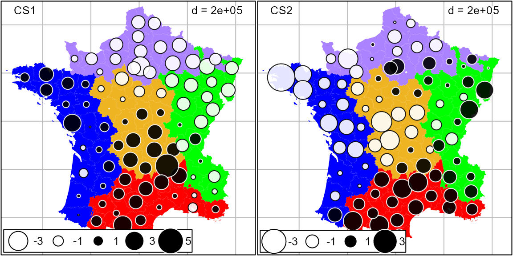
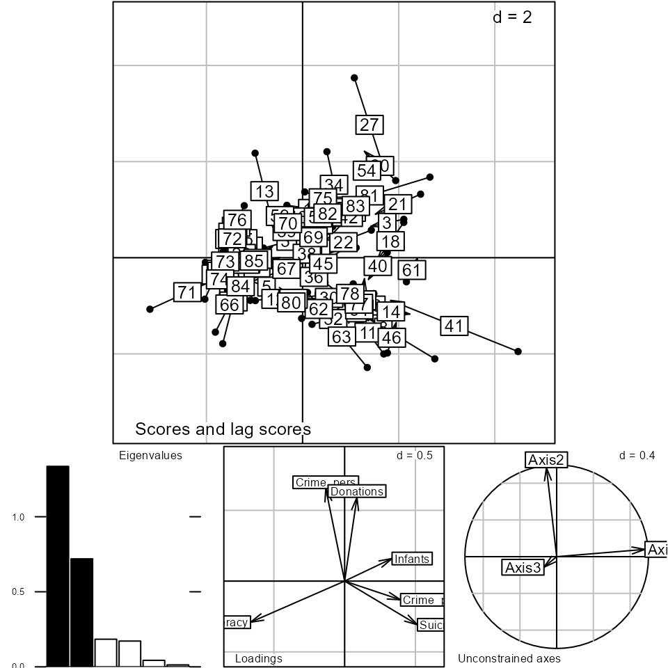

Guerry data: Spatial Multivariate Analysis
Stéphane Dray
2025-01-02
Source:vignettes/MultiSpat.Rmd
MultiSpat.RmdThis vignette indicates how to perform the analyses described in Dray and Jombart (2011) of data derived from André-Michel Guerry’s (1833) Essai sur la Statistique Morale de la France. It illustrates some classical methods for analysis of multivariate spatial data that focus either on the multivariate aspect or on the spatial one, as well as some more modern methods that attempt to integrate geographical and multivariate aspects simultaneously.
Preliminary steps
Several packages are required to run the different analyses and
should be loaded. The ade4 package for multivariate
analysis is supplemented by adegraphics (for associated
graphical methods) and adespatial for multivariate spatial
analysis. For further information on this spatial analysis approach, see
vignette(package="adespatial", "tutorial").
library(Guerry) # Guerry's data
library(sp) # management of spatial data
library(ade4) # multivariate analysis
library(adegraphics) # graphical representation
library(spdep) # spatial dependency
library(adespatial) # multivariate spatial analysis
#> Error in get(paste0(generic, ".", class), envir = get_method_env()) :
#> object 'type_sum.accel' not foundGuerry gathered data on crimes, suicide, literacy and other moral
statistics for various départements (i.e., counties) in France. He
provided the first real social data analysis, using graphics and maps to
summarize this georeferenced multivariate dataset. We use the dataset
gfrance85 and consider six key quantitative variables
(shown in the table below) for each of the 85 départements of France in
1830 (Corsica, an island and often an outlier, was excluded).
Data are recorded on aligned scales so that larger numbers consistently reflect “morally better”. Thus, four of the “bad” variables are recorded in the inverse form, as “Population per …”. With this scaling, it would be expected that all correlations be .
| Name | Description |
|---|---|
Crime_pers |
Population per crime against persons |
Crime_prop |
Population per crime against property |
Literacy |
Percent of military conscripts who can read and write |
Donations |
Donations to the poor |
Infants |
Population per illegitimate birth |
Suicides |
Population per suicide |
The dataset gfrance85 is actually a
SpatialPolygonsDataFrame object created with the
sp package. It contains the polygon boundaries of the map
of France in 1830, as well the variables in the Guerry data
frame. As an ordinary data.frame, it has these
components
names(gfrance85)
#> [1] "dept" "Region" "Department" "Crime_pers"
#> [5] "Crime_prop" "Literacy" "Donations" "Infants"
#> [9] "Suicides" "MainCity" "Wealth" "Commerce"
#> [13] "Clergy" "Crime_parents" "Infanticide" "Donation_clergy"
#> [17] "Lottery" "Desertion" "Instruction" "Prostitutes"
#> [21] "Distance" "Area" "Pop1831"To simplify analyses, we extract the components to be used below.
data(gfrance85)
gdata <- gfrance85@data # the Guerry data.frame
vars <- c("Crime_pers", "Crime_prop", "Literacy", "Donations", "Infants", "Suicides")
df <- gdata[, vars] # the 6 variables
france.map <- as(gfrance85, "SpatialPolygons") # the map
xy <- coordinates(gfrance85) # spatial coordinates
dep.names <- gdata[, "Department"] # departement names
region.names <- gdata[, "Region"] # region names
col.region <- colors()[c(149, 254, 468, 552, 26)] # colors for regionStandard approaches
In this section, we focus on classical approaches that consider either the multivariate or the spatial aspect of the data.
Multivariate analysis
Here we consider variables measured for individuals (départements of France). As only quantitative variables have been recorded, principal component analysis (PCA, Hotelling 1933) is well adapted. PCA summarizes the data by maximizing simultaneously the variance of the projection of the individuals onto the principal axes and the sum of the squared correlations between the principal component and the variables.
pca <- dudi.pca(df, scannf = FALSE, nf = 3)The biplot is simply obtained by
biplot(pca, plabel.cex = 0.8)
The first two PCA dimensions account for 35.7% and 20% ,respectively, of the total variance.
pca$eig/sum(pca$eig) * 100
#> [1] 35.505 20.680 18.335 10.793 8.877 5.810Correlations between variables and principal components can be represented on a correlation circle. The first axis is negatively correlated to literacy and positively correlated to property crime, suicides and illegitimate births. The second axis is aligned mainly with personal crime and donations to the poor.
s.corcircle(pca$co)Spatial information can be added on the factorial map representing the projections of départements on principal axes by coloring according to colors representing the different regions of France.
s.label(pca$li,
ppoint.col = col.region[region.names],
plabel.optim = TRUE,
plabel.cex = 0.6)Draw the map, colored by region:
s.Spatial(france.map,
col = col.region[region.names],
plabel.cex = 0)
s.class(xy,
region.names,
col = col.region,
add = TRUE,
ellipseSize = 0, starSize = 0)
For the first axis, the North and East are characterized by negative scores, corresponding to high levels of literacy and high rates of suicides, crimes against property and illegitimate births. The second axis mainly contrasts the West (high donations to the the poor and low levels of crime against persons) to the South.
Spatial autocorrelation
Spatial autocorrelation statistics, such as Moran (1948) Coefficient (MC) and Geary (1954) Ratio, aim to measure and analyze the degree of dependency among observations in a geographical context (Cliff and Ord 1973).
The spatial weighting matrix
The first step of spatial autocorrelation analysis is to define a
spatial weighting matrix
. In the case of Guerry’s data, we simply defined a binary neighborhood
where two départements are considered as neighbors if they share a
common border. The spatial weighting matrix is then obtained after
row-standardization (style = "W"):
We can represent this neighborhood on the geographical map:
s.Spatial(france.map,
nb = nb,
plabel.cex = 0,
pSp.border = "white")
Moran’s Coefficient
Once the spatial weights have been defined, the spatial autocorrelation statistics can then be computed. Let us consider the -by-1 vector containing measurements of a quantitative variable for spatial units. The usual formulation for Moran’s coefficient of spatial autocorrelation (Cliff and Ord 1973; Moran 1948) is
MC can be rewritten using matrix notation: where is the vector of centered values () and is a vector of ones (of length ).
The significance of the observed value of MC can be tested by a Monte-Carlo procedure, in which locations are permuted to obtain a distribution of MC under the null hypothesis of random distribution. An observed value of MC that is greater than that expected at random indicates the clustering of similar values across space (positive spatial autocorrelation), while a significant negative value of MC indicates that neighboring values are more dissimilar than expected by chance (negative spatial autocorrelation).
We computed MC for the Guerry’s dataset. A positive and significant autocorrelation is identified for each of the six variables. Thus, the values of literacy are the most covariant in adjacent departments, while illegitimate births (Infants) covary least.
moran.randtest(df, lw)
#> class: krandtest lightkrandtest
#> Monte-Carlo tests
#> Call: moran.randtest(x = df, listw = lw)
#>
#> Number of tests: 6
#>
#> Adjustment method for multiple comparisons: none
#> Permutation number: 999
#> Test Obs Std.Obs Alter Pvalue
#> 1 Crime_pers 0.4118 6.126 greater 0.001
#> 2 Crime_prop 0.2636 4.012 greater 0.002
#> 3 Literacy 0.7176 10.195 greater 0.001
#> 4 Donations 0.3534 5.146 greater 0.001
#> 5 Infants 0.2332 3.781 greater 0.002
#> 6 Suicides 0.4874 7.461 greater 0.001Moran scatterplot
If the spatial weighting matrix is row-standardized, we can define the lag vector (i.e., ) composed of the weighted (by the spatial weighting matrix) averages of the neighboring values. Thus, we have: since in this case . This shows clearly that MC measures the autocorrelation by giving an indication of the intensity of the linear association between the vector of observed values and the vector of weighted averages of neighboring values . Anselin (1996) proposed to visualize MC in the form of a bivariate scatterplot of against . A linear regression can be added to this Moran scatterplot, with slope equal to MC.
Considering the Literacy variable of Guerry’s data, the Moran scatterplot clearly shows strong autocorrelation. It also shows that the Hautes-Alpes département has a slightly outlying position characterized by a high value of Literacy compared to its neighbors.
x <- df[, 3]
x.lag <- lag.listw(lw, df[, 3])
moran.plot(x, lw)
text(x[5], x.lag[5], dep.names[5], pos = 1, cex = 0.8)Indirect integration of multivariate and geographical aspects
The simplest approach considered a two-step procedure where the data are first summarized with multivariate analysis such as PCA. In a second step, univariate spatial statistics or mapping techniques are applied to PCA scores for each axis separately. One can also test for the presence of spatial autocorrelation for the first few scores of the analysis, with univariate autocorrelation statistics such as MC. We mapped scores of the départements for the first two axes of the PCA of Guerry’s data. Even if PCA maximizes only the variance of these scores, there is also a clear spatial structure, as the scores are highly autocorrelated. The map for the first axis corresponds closely to the split between la France éclairée (North-East characterized by an higher level of Literacy) and la France obscure.
moran.randtest(pca$li, lw)
#> class: krandtest lightkrandtest
#> Monte-Carlo tests
#> Call: moran.randtest(x = pca$li, listw = lw)
#>
#> Number of tests: 3
#>
#> Adjustment method for multiple comparisons: none
#> Permutation number: 999
#> Test Obs Std.Obs Alter Pvalue
#> 1 Axis1 0.5847 8.816 greater 0.001
#> 2 Axis2 0.5614 7.988 greater 0.001
#> 3 Axis3 0.1703 2.649 greater 0.006
s.value(xy,
pca$li[, 1:2],
Sp = france.map,
pSp.border = "white",
symbol = "circle",
pgrid.draw = FALSE)Spatial multivariate analysis
Over the last decades, several approaches have been developed to consider both geographical and multivariate information simultaneously. The multivariate aspect is usually treated by techniques of dimensionality reduction similar to PCA. On the other hand, several alternatives have been proposed to integrate the spatial information.
Spatial partition
One alternative is to consider a spatial partition of the study area. In this case, the spatial information is coded as a categorical variable, and each category corresponds to a region of the whole study area. For instance, Guerry’s data contained a partition of France into 5 regions.
We used the between-class analysis (BCA, Dolédec and Chessel 1987), to investigate differences between regions. BCA maximizes the variance between groups.
bet <- bca(pca, region.names, scannf = FALSE, nf = 2)Here, 28.8 % of the total variance (sum of eigenvalues of PCA) corresponds to the between-regions variance (sum of the eigenvalues of BCA).
bet$ratio
#> [1] 0.2942The main graphical outputs are obtained by the generic
plot function:
plot(bet)The barplot of eigenvalues indicates that two axes should be interpreted. The first two BCA dimensions account for 59 % and 30.2 %, respectively, of the between-regions variance.
barplot(bet$eig)
bet$eig/sum(bet$eig) * 100
#> [1] 58.841 30.543 7.078 3.538The coefficients used to construct the linear combinations of variables are represented:
s.arrow(bet$c1, plabel.cex = 0.8)The first axis opposed literacy to property crime, suicides and illegitimate births. The second axis is mainly aligned with personal crime and donations to the poor.
Projections of départements on the BCA axes can be represented on the factorial map:
s.label(bet$ls,
as.character(dep.names),
ppoint.cex = 0,
plabel.optim = TRUE,
plabel.col = col.region[region.names], plabel.cex = 0.5)
s.class(bet$ls,
fac = region.names,
col = col.region, ellipse = 0, add = TRUE)The scores can be mapped to show the spatial aspects:
s.value(xy,
bet$ls,
symbol = "circle",
Sp = france.map,
pSp.col = col.region[region.names], pSp.border = "transparent")
The results are very close to those obtained by PCA: the first axis contrasted the North and the East (la France éclairée) to the other regions while the South is separated from the other regions by the second axis. The high variability of the region Centre is also noticeable. In contrast, the South is very homogeneous.
Spatial explanatory variables
Principal component analysis with respect to the instrumental variables (PCAIV, Rao 1964), and related methods, have been often used in community ecology to identify spatial relationships. The spatial information is introduced in the form of spatial predictors and the analysis maximized the “spatial variance” (i.e., the variance explained by spatial predictors). Note that BCA can also be considered as a particular case of PCAIV, where the explanatory variables are dummy variables indicating group membership.
Trend surface of geographic coordinates
Student (1914) proposed to express observed values in time series as a polynomial function of time, and mentioned that this could be done for spatial data as well. Borcard, Legendre, and Drapeau (1992) extended this approach to the spatial and multivariate case by introducing polynomial functions of geographic coordinates as predictors in PCAIV. We call this approach PCAIV-POLY.
The centroids of départements of France were used to construct a second-degree orthogonal polynomial.
poly.xy <- orthobasis.poly(xy, degree = 2)
s.value(xy, poly.xy, Sp = france.map, plegend.drawKey = FALSE)PCAIV is then performed using the pcaiv function:
pcaiv.xy <- pcaiv(pca, poly.xy, scannf = FALSE, nf = 2)Here, 32.4 % of the total variance (sum of eigenvalues of PCA) is explained by the second-degree polynomial (sum of eigenvalues of PCAIV). The first two dimensions account for 51.4 % and 35.2 %, respectively, of the explained variance.
sum(pcaiv.xy$eig)/sum(pca$eig) * 100
#> [1] 32.59
pcaiv.xy$eig/sum(pcaiv.xy$eig) * 100
#> [1] 51.888 35.392 5.375 4.828 2.517The outputs of PCAIV-POLY (coefficients of variables, maps of
départements scores, etc.) are very similar to those obtained by BCA.
They can be represented easily by the generic plot
function:
plot(pcaiv.xy)Moran’s eigenvector maps
An alternative way to build spatial predictors is by the diagonalization of the spatial weighting matrix W. Moran’s eigenvector maps (MEM, Dray, Legendre, and Peres-Neto 2006) are the eigenvectors of the doubly-centered matrix W. They are orthogonal vectors with a unit norm maximizing MC (Griffith 1996). MEM associated with high positive (or negative) eigenvalues have high positive (or negative) autocorrelation. MEM associated with eigenvalues with small absolute values correspond to low spatial autocorrelation, and are not suitable for defining spatial structures.
We used the spatial weighting matrix defined above to construct MEM. The first ten MEM, corresponding to the highest levels of spatial autocorrelation, have been mapped:
mem1 <- scores.listw(lw)
s.value(xy, mem1[, 1:9], Sp = france.map, plegend.drawKey = FALSE)We introduced the first ten MEM as spatial explanatory variables in PCAIV. We call this approach PCAIV-MEM.
pcaiv.mem <- pcaiv(pca, mem1[,1:10], scannf = FALSE)Here, 44.1 % of the total variance (sum of eigenvalues of PCA) is explained by the first ten MEM (sum of eigenvalues of PCAIV). The first two dimensions account for 54.9 % and 26.3 %, respectively, of the explained variance.
sum(pcaiv.mem$eig)/sum(pca$eig) * 100
#> [1] 44.97
pcaiv.mem$eig/sum(pcaiv.mem$eig) * 100
#> [1] 55.569 26.394 8.682 4.444 3.383 1.528The outputs of PCAIV-MEM (coefficients of variables, maps of
départements scores, etc.) are very similar to those obtained by BCA.
They can be represented easily by the generic plot
function:
plot(pcaiv.mem)Spatial graph and weighting matrix
The MEM framework introduced the spatial information into multivariate analysis through the eigen-decomposition of the spatial weighting matrix. Usually, we consider only a part of the information contained in this matrix because only a subset of MEM are used as regressors in PCAIV. In this section, we focus on multivariate methods that consider the spatial weighting matrix under its original form.
Wartenberg (1985) was the first to develop a multivariate analysis based on MC. His work considered only normed and centered variables (i.e., normed PCA) for the multivariate part and a binary symmetric connectivity matrix for the spatial aspect. Dray, Saïd, and Débias (2008) generalized Wartenberg’s method by introducing a row-standardized spatial weighting matrix in the analysis of a statistical triplet. This approach is very general and allows us to define spatially-constrained versions of various methods (corresponding to different triplets) such as correspondence analysis or multiple correspondence analysis. MULTISPATI finds coefficients to obtain a linear combination of variables that maximizes a compromise between the classical multivariate analysis and a generalized version of Moran’s coefficient.
ms <- multispati(pca, lw, scannf = FALSE)The main outputs of MULTISPATI can be represented easily by the
generic plot function:
plot(ms)
The barplot of eigenvalues suggests two main spatial structures.
Eigenvalues of MULTISPATI are the product between the variance and the
spatial autocorrelation of the scores, while PCA maximizes only the
variance. The differences between the two methods are computed by the
summary function:
summary(ms)
#>
#> Multivariate Spatial Analysis
#> Call: multispati(dudi = pca, listw = lw, scannf = FALSE)
#>
#> Scores from the initial duality diagram:
#> var cum ratio moran
#> RS1 2.130 2.130 0.3550 0.5847
#> RS2 1.241 3.371 0.5619 0.5614
#> RS3 1.100 4.471 0.7452 0.1703
#>
#> Multispati eigenvalues decomposition:
#> eig var moran
#> CS1 1.3356 2.032 0.6572
#> CS2 0.7194 1.213 0.5933Hence, there is a loss of variance compared to PCA (2.14 versus 2.017 for axis 1; 1.201 versus 1.177 for axis 2) but a gain of spatial autocorrelation (0.551 versus 0.637 for axis 1; 0.561 versus 0.59 for axis 2).
Coefficients of variables allow to interpret the structures:
s.arrow(ms$c1, plabel.cex = 0.8)The first axis opposes literacy to property crime, suicides and illegitimate births. The second axis is aligned mainly with personal crime and donations to the poor. The maps of the scores show that the spatial structures are very close to those identified by PCA. The similarity of results between PCA and its spatially optimized version confirm that the main structures of Guerry’s data are spatial.
Spatial autocorrelation can be seen as the link between one variable and the lagged vector. This interpretation is used to construct the Moran scatterplot and can be extended to the multivariate case in MULTISPATI by analyzing the link between scores and lagged scores:
s.match(ms$li, ms$ls, plabel.cex = 0)
s.match(ms$li[c(10, 41, 27), ], ms$ls[c(10, 41, 27), ], label = dep.names[c(10,
41, 27)], plabel.cex = 0.8, add = TRUE)Each département can be represented on the factorial map by an arrow (the bottom corresponds to its score, the head corresponds to its lagged score. A short arrow reveals a local spatial similarity (between one plot and its neighbors) while a long arrow reveals a spatial discrepancy. This viewpoint can be interpreted as a multivariate extension of the local index of spatial association (Anselin 1995). For instance: * Aude has a very small arrow, indicating that this département is very similar to its neighbors. * Haute-Loire has a long horizontal arrow which reflects its high values for the variables Infants (31017), Suicides (163241) and Crime_prop (18043) compared to the average values over its neighbors (27032.4, 60097.8 and 10540.8 for these three variables). * Finistère corresponds to an arrow with a long vertical length which is due to its high values compared to its neighbors for Donations (23945 versus 12563) and Crime_pers (29872 versus 25962).
The link between the scores and the lagged scores (averages of neighbors weighted by the spatial connection matrix) can be mapped in the geographical space. For the first two axes, we have:
s.value(xy, ms$li, Sp = france.map)Conclusions
Even if the methods presented are quite different in their theoretical and practical viewpoints, their applications to Guerry’s dataset yield very similar results. We provided a quantitative measure of this similarity by computing Procrustes statistics (Peres-Neto and Jackson 2001; Dray, Chessel, and Thioulouse 2003) between the scores of the départements onto the first two axes for the different analyses. All the values of the statistic are very high and significant; this confirms the high concordance between the outputs of the different methods.
mat <- matrix(NA, 4, 4)
mat.names <- c("PCA", "BCA", "PCAIV-POLY", "PCAIV-MEM", "MULTISPATI")
colnames(mat) <- mat.names[-5]
rownames(mat) <- mat.names[-1]
mat[1, 1] <- procuste.randtest(pca$li[, 1:2], bet$ls[, 1:2])$obs
mat[2, 1] <- procuste.randtest(pca$li[, 1:2], pcaiv.xy$ls[, 1:2])$obs
mat[3, 1] <- procuste.randtest(pca$li[, 1:2], pcaiv.mem$ls[, 1:2])$obs
mat[4, 1] <- procuste.randtest(pca$li[, 1:2], ms$li[, 1:2])$obs
mat[2, 2] <- procuste.randtest(bet$ls[, 1:2], pcaiv.xy$ls[, 1:2])$obs
mat[3, 2] <- procuste.randtest(bet$ls[, 1:2], pcaiv.mem$ls[, 1:2])$obs
mat[4, 2] <- procuste.randtest(bet$ls[, 1:2], ms$li[, 1:2])$obs
mat[3, 3] <- procuste.randtest(pcaiv.xy$ls[, 1:2], pcaiv.mem$ls[, 1:2])$obs
mat[4, 3] <- procuste.randtest(pcaiv.xy$ls[, 1:2], ms$li[, 1:2])$obs
mat[4, 4] <- procuste.randtest(pcaiv.mem$ls[, 1:2], ms$li[, 1:2])$obs
mat
#> PCA BCA PCAIV-POLY PCAIV-MEM
#> BCA 0.9858 NA NA NA
#> PCAIV-POLY 0.9762 0.9904 NA NA
#> PCAIV-MEM 0.9894 0.9942 0.9954 NA
#> MULTISPATI 0.9877 0.9952 0.9947 0.9985